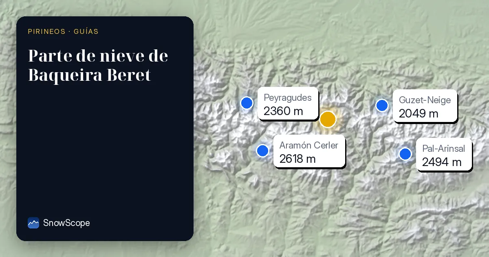

Parte de nieve de Baqueira Beret: 21 cm en cota alta y una base por encima de lo normal antes del puente
Baqueira Beret tiene hoy, 27 de noviembre de 2026, 21 cm de nieve en cota alta tras las nevadas del miércoles y el jueves, que dejaron 23 cm. A 2.052 m el manto es de 13 cm, cuando lo normal para la fecha son 8 cm: un buen comienzo para un Val d'Aran que suele arrancar tarde.
Consulta la previsión de nieve en tiempo real de Estació d'Esquí Baqueira-Beret en la app SnowScopeEspesor de nieve, alertas de nieve polvo y mapa 3D, gratis.
Parte del viernes 27 de noviembre
Nieve en cota alta: 21 cm. Nieve nueva: 11 cm el miércoles y 12 cm el jueves; 30 cm en siete días. Previsión: fin de semana seco y frío, apenas 2 cm el domingo en las cumbres, y nada significativo el lunes 30. En siete días, unos 3 cm en lo más alto.
La estación va de 1.504 m a 2.600 m. Con el frío de estos días la nieve se conserva y los cañones pueden trabajar de noche, que es lo que más importa a una semana del puente.
¿Es mucho o poco para la fecha?
Para finales de noviembre es bastante. En un invierno normal, una capa de 30 cm a 2.052 m no llega hasta el 22 de diciembre, y el 8 de diciembre lo habitual son 15 cm. Este año el manto ya está por encima de ese valor.
Pero el Val d'Aran es así: el mejor invierno de los últimos 46, 2012-13, llegó a 152 cm, y el peor, 1989-90, se quedó en 26 cm. Un buen noviembre no garantiza el invierno; lo que sí hace es que diciembre empiece con ventaja.
El puente de diciembre (5 al 8)
El puente de la Constitución y la Inmaculada es la primera gran cita del año en Baqueira. A 2.052 m lo normal el 8 de diciembre son 15 cm, y en un invierno de cada cuatro menos de 7 cm. Este año ya hay más nieve que eso, así que, salvo un temporal templado, el puente debería tener buena parte del dominio abierto entre nieve natural y producida.
Las zonas más altas, Beret y Bonaigua, suelen tener la mejor nieve en diciembre; la cota baja hacia Baqueira 1500 depende más de los cañones.
Navidad en el Val d'Aran
El 25 de diciembre la altura habitual a 2.052 m es de 26 cm; un invierno de cada cuatro tiene menos de 10 cm y uno de cada cuatro más de 44 cm. Una base de 50 cm el 1 de enero se alcanzó en el 26 % de los inviernos. Por eso la Navidad en Baqueira es segura para esquiar, pero no siempre con nieve polvo.
El mes con más nieve suele ser febrero, con unos 67 cm a mitad de ladera.
Preguntas frecuentes
¿Estará abierta toda la estación en el puente? Depende de la nieve que caiga hasta entonces y de la producción. Con la base actual, lo razonable es esperar buena parte de Beret y Bonaigua y una parte de Baqueira.
¿Hay riesgo de que la nieve se vaya antes? El frío de estos días la conserva. Lo que más daño hace en el Val d'Aran es un temporal templado con lluvia en cota media, poco probable en la próxima semana.
¿Cuándo es mejor ir? Si se busca nieve abundante, de enero a marzo. En un invierno normal la altura a 2.052 m pasa de 26 cm en Navidad a unos 67 cm en febrero.
Consejos prácticos
Reservad el puente ya: los alojamientos de Vielha, Salardú y Baqueira se llenan en cuanto se anuncia una buena apertura. Si venís desde Barcelona o Lleida, el túnel de Vielha es el acceso más directo; en días de nevada, cadenas en el maletero.
Los datos de cada día, en la base, a media ladera y en la cima, están en la página de nieve de Baqueira Beret.
Consejos para esquiadores
- Para el puente, esquiad por la mañana en Beret y Bonaigua, donde la nieve es más fría.
- Por la tarde, las laderas al sol se ablandan: buen momento para las pistas de Baqueira 1800.
- Comprobad el estado de la carretera de la Bonaigua: puede cerrar con nevadas.
- Más en nuestro Baqueira: por qué su nieve es diferente y en la página de España.
Sobre estas cifras
Cifras de nieve: el mapa y la previsión de SnowScope de hoy y nuestro histórico de 46 inviernos pasados en cada estación (una estimación para la zona, no el parte de la estación).
Boletines oficiales de aludes: Lauegi – Conselh Generau d'Aran
Citar este informe
Para investigación, docencia o prensa: cifras y gráficos reutilizables libremente bajo CC BY 4.0 con esta cita.
SnowScope (2026), Parte de nieve de Baqueira Beret: 21 cm en cota alta y una base por encima de lo normal antes del puente, https://snowscope.app/blog/es/2026/11/parte-de-nieve-baqueira-beret-finales-noviembre-2026-y-puente-de-diciembre.html, consultado el 2026-11-27
SnowScope (Atlas Labs). (2026, November 27). Parte de nieve de Baqueira Beret: 21 cm en cota alta y una base por encima de lo normal antes del puente. SnowScope snow reports. https://snowscope.app/blog/es/2026/11/parte-de-nieve-baqueira-beret-finales-noviembre-2026-y-puente-de-diciembre.html
BibTeX
@misc{snowscope2026partedenievebaqueirabere,
author = {{SnowScope (Atlas Labs)}},
title = {Parte de nieve de Baqueira Beret: 21 cm en cota alta y una base por encima de lo normal antes del puente},
year = {2026},
month = nov,
howpublished = {\url{https://snowscope.app/blog/es/2026/11/parte-de-nieve-baqueira-beret-finales-noviembre-2026-y-puente-de-diciembre.html}},
note = {Published 2026-11-27 17:47 UTC; accessed 2026-11-27}
}· CC BY 4.0 · Métodos, datos y herramientas →
Sigue Estació d'Esquí Baqueira-Beret
Gratis: un aviso cuando llega la nieve y la previsión cada mañana.
Más partes de nieve

Previsión de nieve para el Pirineo a 3 semanas con el conjunto ECMWF de 50 miembros, NOAA GEFS y NASA MODIS: quincena cercana a lo normal (19,1 cm frente a 18,3 cm), nevada en el oeste y el centro, escasa hacia Andorra y la Cerdanya. Cota de nieve en el suelo hacia 1.500 m.

Compara Grandvalira y estaciones españolas en diciembre de 2026 en cuanto a espesores de nieve, cotas de remontes y precios desde 49,00 EUR.